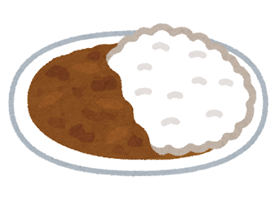

Japanese Cuisine
Curry Rice: Japan’s Beloved Comfort Food
Adopted from British naval cuisine and transformed into a national obsession, Japanese curry rice is the ultimate weeknight comfort meal — rich, warm, and deeply…
Read more